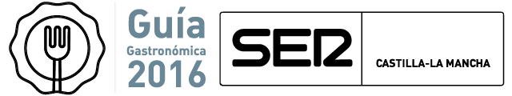

Para tener acceso a la aplicación completa, necesita una conexión a internet.
ACTUALIZAR

Encuentra información gastronómica de interés
Restaurantes
Recetario
Productos de la tierra
Calendario de eventos y ferias